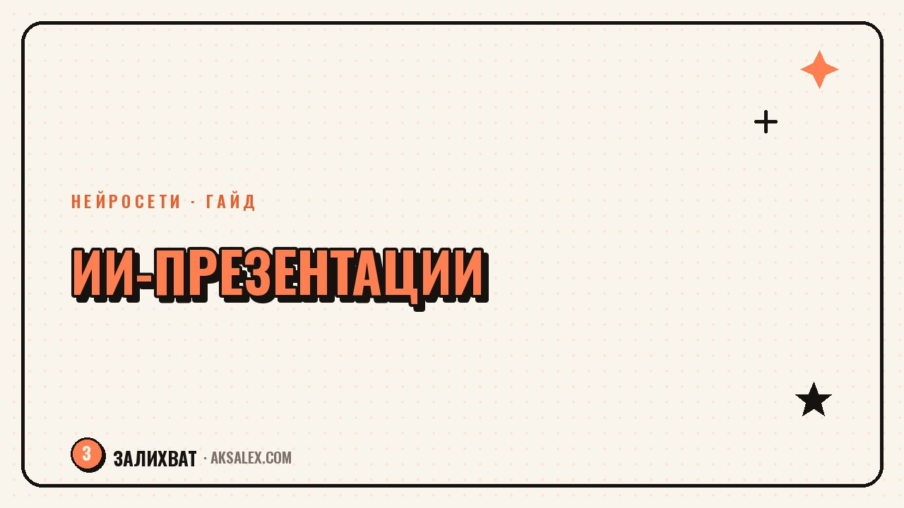

Нейросети для презентаций: как выбрать сервис

Дедлайн через час, а презентация - это пустой файл и заголовок на первом слайде. Нейросети для презентаций умеют собрать структуру, подобрать иллюстрации и расставить текст по слайдам за несколько минут - остаётся только поправить детали. Разберём, как это работает на практике, какие сервисы стоит попробовать и в какой момент лучше сесть и собрать слайды руками.
Как нейросеть вообще делает презентацию
Принцип у большинства сервисов одинаковый: ты даёшь тему или готовый текст, а нейросеть разбивает его на логические блоки, подбирает заголовки для слайдов и раскладывает содержимое по шаблону. Дальше подключается вторая модель - генератор изображений или библиотека стоковых фото - и подбирает иллюстрации под смысл каждого слайда.
Разница между сервисами - в том, насколько умно происходит это разбиение и насколько гибко потом можно всё переделать. Одни хорошо угадывают структуру, но дают неудобный редактор. Другие слабее со структурой, зато позволяют докрутить каждую деталь вручную, не переключаясь в другую программу.
Что можно доверить нейросети, а что лучше проверить самому
- Структуру и порядок слайдов - нейросеть справляется хорошо
- Заголовки и краткие тезисы - обычно нужна лёгкая правка
- Иллюстрации и иконки - иногда мимо смысла, стоит перепроверить
- Цифры и факты - никогда не бери на веру, сверяй с источником
- Общий стиль оформления - можно доверить шаблону, но проверить фирменные цвета
Обзор популярных сервисов
Gamma - один из самых известных сервисов такого рода: ты вставляешь текст или тезисы, а нейросеть сама собирает из них слайды, подбирает картинки и предлагает несколько вариантов оформления. Готовую презентацию можно экспортировать в PDF или показывать прямо из браузера как веб-страницу.
Tome делает похожее, но с уклоном в сторону нарративных презентаций - историй, питчей, портфолио. Beautiful.ai фокусируется на автоматическом выравнивании и адаптивных шаблонах: когда ты меняешь текст, элементы слайда сами перестраиваются, не съезжая друг на друга. Из встроенных решений стоит вспомнить Copilot в PowerPoint - он работает поверх привычного интерфейса Office и подойдёт тем, кто не хочет переучиваться на новый сервис.
Нейросеть для презентаций экономит не творчество, а самое муторное - верстку и подбор картинок. Смысл и аргументацию всё равно собираешь сам.
| Сервис | Особенность | Экспорт |
|---|---|---|
| Gamma | Быстрая сборка из текста, несколько стилей на выбор | PDF, веб-страница, PPTX |
| Tome | Уклон в нарратив и питчи, эффектные переходы | Веб-ссылка, PDF |
| Beautiful.ai | Адаптивные шаблоны, автоматическое выравнивание | PDF, PPTX |
| Copilot в PowerPoint | Работает в привычном интерфейсе Office | PPTX сразу |
Как собрать презентацию за один заход: пошагово
Первый шаг - не открывать сервис, а набросать структуру от руки или в заметках: сколько слайдов нужно, какая у презентации цель, кто аудитория. Нейросеть отлично раскладывает готовую мысль по слайдам, но плохо придумывает мысль за тебя с нуля.
Порядок действий
- Сформулируй цель презентации одной фразой - зачем её смотрят
- Набросай 5-8 тезисов по порядку, как в оглавлении
- Вставь тезисы в сервис и выбери шаблон, близкий по стилю к теме
- Пройдись по каждому слайду и убери лишний текст - на слайде не должно быть больше одной мысли
- Проверь цифры, названия и цитаты вручную - это зона ответственности человека, не нейросети
После автоматической сборки почти всегда остаются один-два слайда, которые нейросеть поняла не так, как задумывалось. Это нормально: их проще переделать руками, чем пытаться объяснить сервису тонкость через промпт. Пять минут ручной правки экономят повторную генерацию всей презентации заново.
Когда нейросеть не поможет, а помешает
Если презентация строится на сложных графиках и точных данных - финансовый отчёт, научный доклад, техническая документация - лучше собирать её в специализированном инструменте вроде Excel или Power BI и переносить готовые графики в слайды вручную. Нейросети хороши в тексте и общей структуре, но не заточены под точные вычисления и сложную визуализацию данных.
Стоит быть аккуратным и с шаблонностью: если весь отдел одновременно пользуется одним и тем же бесплатным сервисом, презентации начинают визуально повторять друг друга. Для важных выступлений - питч инвестору, публичная защита проекта - имеет смысл взять сгенерированную структуру как каркас, а оформление доработать самому или отдать дизайнеру.
Частые ошибки при работе с ИИ-презентациями
Самая частая ошибка - вставлять в сервис сырой текст без разбивки на смысловые блоки и надеяться, что нейросеть сама разберётся, что здесь главное, а что второстепенное. Чем чётче ты сформулировал структуру заранее, тем точнее получится результат с первой попытки.
Вторая ошибка - оставлять сгенерированный текст без правок. Нейросеть пишет ровно, но безлично, и если не пройтись по формулировкам своими словами, презентация будет звучать как у всех, кто пользовался тем же сервисом с тем же промптом. Третья - доверять цифрам и фактам, которые появились в слайдах сами, без твоего ввода: их нужно проверять как любой другой сгенерированный текст.
Частые вопросы
Как сделать презентацию в Gamma пошагово
Зарегистрируйся на сайте сервиса, выбери создание презентации из текста и вставь тезисы или тему. Gamma предложит несколько вариантов структуры и оформления - выбери подходящий, а затем пройдись по каждому слайду и подправь текст и картинки вручную.
Есть ли бесплатные нейросети для презентаций на русском
Да, часть сервисов вроде Gamma и Copilot в PowerPoint работает с русским языком и имеет бесплатный тариф с ограничением по количеству презентаций или слайдов. Для разовых задач этого обычно достаточно, для регулярной работы стоит смотреть платные тарифы.
Можно ли сделать презентацию нейросетью без интернета
Большинство сервисов для генерации презентаций работают через браузер и требуют подключения к интернету, потому что вычисления происходят на стороне сервера. Локальных офлайн-аналогов с сопоставимым качеством пока практически нет.
Подходит ли нейросеть для презентации с графиками и цифрами
Для сложных графиков и точных расчётов лучше использовать специализированные инструменты вроде Excel или Power BI, а готовые графики переносить в презентацию вручную. Нейросети хорошо работают с текстом и структурой, но не заточены под точную визуализацию данных.
Что делать, если презентация от нейросети выглядит шаблонно
Возьми сгенерированную структуру как каркас и доработай оформление вручную - поменяй шрифты, цвета и расположение элементов под свой стиль. Также помогает переписать текст своими словами, чтобы презентация не звучала как у всех, кто использовал тот же сервис.
Раз тема оказалась полезной, вот что почитать следующим. Какую нейросеть для генерации изображений выбрать новичку и как написать первый промпт правильно.
Читать статью →а не вручную